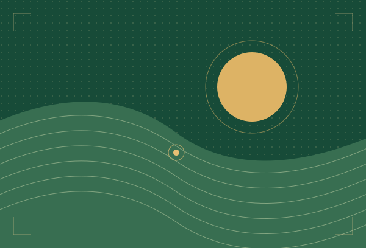

Desenvolvimento Sustentável
Promover o desenvolvimento sustentável do distrito de Zumbo.
Explorar área
Associação Zumbo Unido
Promovemos a solidariedade, o empreendedorismo e o desenvolvimento sustentável das comunidades, valorizando a união entre os nativos e amigos de Zumbo.
Zumbo · Província de TeteQuem somos
Somos uma associação moçambicana sem fins lucrativos, constituída por nativos do distrito de Zumbo.
Com sede na cidade de Tete e âmbito provincial, reunimos nativos e amigos de Zumbo em torno da solidariedade, da coesão social e do desenvolvimento sustentável.
Saiba mais sobre a associaçãoObjectivos estatutários
Cinco prioridades que orientam a associação, de acordo com o artigo 4.º do Estatuto.
Promover o desenvolvimento sustentável do distrito de Zumbo.
Explorar áreaIncentivar o empreendedorismo juvenil e comunitário.
Explorar áreaApoiar iniciativas de educação, cultura, saúde e ambiente.
Explorar áreaEstimular a solidariedade entre os nativos e amigos de Zumbo.
Explorar áreaReforçar a coesão social e o exercício da cidadania activa.
Explorar áreaNossa missão
Promover o desenvolvimento solidário, social e económico das comunidades do Distrito de Zumbo e da Província de Tete, através de iniciativas sustentáveis de empreendedorismo, cooperação e inclusão, valorizando os recursos locais, a participação comunitária e o espírito de união entre os nativos e amigos de Zumbo.
Conheça a nossa missão
Iniciativas
O catálogo reúne projectos que a associação autorize a divulgar.
Cada ficha publicada apresentará a área de intervenção, a descrição e o estado, quando confirmado.
Envolvimento
Conheça as condições de adesão, manifeste interesse em colaborar ou apresente uma proposta de parceria.
Consulte as categorias, os direitos e os deveres previstos no Estatuto.
Informações sobre adesãoSaiba como preparar uma manifestação de interesse e indicar as suas competências e disponibilidade.
Consultar voluntariadoConheça os elementos a incluir numa proposta alinhada com os objectivos da associação.
Consultar parceriasParticipe
Consulte a sede e as informações de contacto da associação.